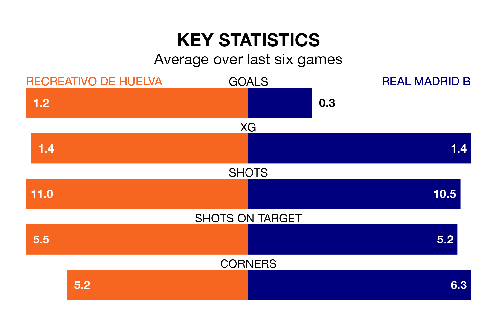

Recreativo de Huelva host Real Madrid B on Sunday at the Estadio Nuevo Colombino in Primera Division RFEF Group 2.
In their last league match, on April 7, Recreativo de Huelva drew with CD Atlético Baleares 0-0 at home.
Madrid B lost, 2-0 at home against Córdoba.
With Rubén Ramos González between the sticks, Recreativo de Huelva can rely on one of the league's safest pair of hands. He has kept 11 clean sheets in his 22 appearances this season, and no 'keeper has prevented the opposition scoring more often in Primera Division RFEF Group 2.
In Madrid B's net, Lucas Cañizares has six clean sheets in 17 games. He has conceded a goal every 77 minutes, 40% more often than the 104 minutes between goals for Ramos González.
With 34 goals in 31 games so far this season, the hosts are scoring at the league's average rate with 1.1 goals per game. And they are conceding fewer than average, letting in 29 goals at a rate of 0.9 per game.
The away side are also average scorers, with 1.1 goals per game. They have conceded 1.2 goals per game.
Recreativo de Huelva are sixth in the table after 31 games, of which they have won 13 and drawn 10, earning 49 points.
Madrid B are seven places behind Recreativo de Huelva in 13th, with nine wins and 11 draws putting them on 38 points.
The home team are in disappointing form in Primera Division RFEF Group 2, with one win and three draws from their last six games.
With two wins and a draw over that period, Madrid B's form is slightly better – they have taken seven points from 18, compared to Recreativo de Huelva's six.
Updated: 11:20 (UTC), 09/04/24